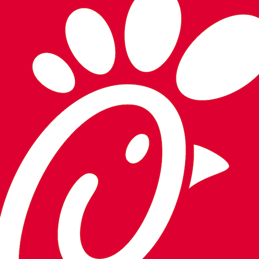
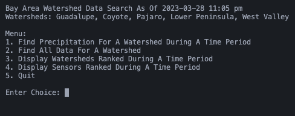
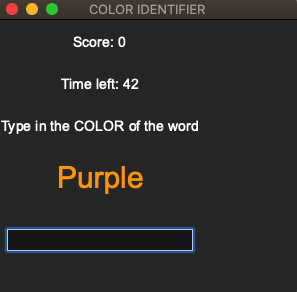

Vincent Xayasak
San Jose Bay Area • xayasakvincent@gmail.com • Pronouns: He, Him, His
San Jose Bay Area
xayasakvincent@gmail.com
Pronouns: He, Him, His
Welcome to my website, I am currently a student at De Anza College majoring in Computer Science.
Whether you're a friend or a recruiter, you will find all the information about my experience,
education, skills, and projects if you scroll below.
Click here to download resume
Experience
View ProjectsOther Jobs:
Chick Fil A Front of House Team Member Summer 2022 - Current
- Providing excellent customer service by greeting customers, taking orders, and answering any questions they may have.
- Managing the drive-thru by taking orders, accurately inputting them into the system, and ensuring orders are delivered to the correct car.
- Working in a team assisting with food preparation by assembling sandwiches, preparing salads, and packaging orders.
Education
Santa Teresa High School Received June 3, 2022
- FlexFactor
Demonstrated an understanding of advanced manufacturing technology,
entrepreneurship, customer segmentation, and value creation.
- First Place in Energy and Transportation category of 2022 SciencePalooza
Created a clean and reusable electromagnetic train and presented to judges.
- Mathematics Engineering Science Achievement (MESA) member
Worked on projects to compete with, math escape rooms, and hackathons.
De Anza College Summer 2022 - Current
Computer Science for Transfer
GPA: 3.87
Coursework
Data Abstract & Structures
Advanced Python Programming
Physics for Scientists and Engineers: Electricity and Magnetism
Intermediate Programming Methodologies in C++
Intermediate Problem Solving in Java
Calculus
Skills
Programming Languages
Development Tools
Workflow
- Version control using Git to track changes.
- Project management using Agile, Scrum, and Replit.
- Documenation by writing docstrings and detailed README files.
- Testing and debugging.
Projects
Bay Area Rainfall Watershed Data Search
Color Game
Interests

Apart from computer science, I have a passion for staying active and playing basketball, as it also offers the opportunity to work on my coordination and teamwork skills. I enjoy getting involved in local basketball leagues or finding a group of friends to play pickup games with. Whether it'd playing competitively or just for fun, basketball is my favorite hobby to stay active and socialize with others who share similar interests.
My love for music is an outlet for creative expression. When I'm forced indoors, I will be on FL Studio, a powerful Digital Audio Workstation that allows me to compose, arrange, and produce music. I create beats, mix and master tracks, and experiment with different sounds and effects. FL Studio offers me endless possibilities for creating my own unique sound. I am also trying to code music with SonicPI.